Privado
Licença Proprietária
Produto maduro
Java 21
SQLite
Windows Desktop
JavaFX 21.0.11
v2.0.0-RC8
Lançamento 26/Jun/2026
RC8 publicada em 15/05/2026. Distribuições já disponíveis na release oficial para Windows, macOS e Linux. A base técnica mais recente já foi validada com JavaFX 21.0.11 na Matriz. Lançamento oficial: 26 de junho de 2026. Vitrine, download e esta wiki ficam em ink.caracore.com.br.
Repositório Privado
Este projeto possui código-fonte privado e é protegido por licença proprietária da Cara Core Informática. Vitrine e releases no canal institucional: download.html.
Visão Geral
O que é o Ink Agenda?
O Ink Agenda é um aplicativo de computador (Windows, macOS e Linux) para tatuadores e estúdios: agenda de sessões, cadastro de clientes, controle de receitas e despesas, saldo por período e indicadores. Tudo fica no seu PC, sem depender de internet para funcionar.
Em resumo:
- 📅 Agenda: Calendário visual e lista do dia (ordem por horário)
- 👤 Clientes: Nome, valor, data/hora; celular opcional; check Pagou na tela Hoje
- 💰 Financeiro: Entradas, saídas, saldo e histórico
- 💾 Backup: Export/import CSV GZIP com senha; soberania dos dados
- 🖥️ Desktop multiplataforma: Windows, macOS e Linux; Java 21 + JavaFX; dados em SQLite local
Arquitetura Técnica
Aplicação desktop nativa em Java 21 e JavaFX 21.0.11, com banco SQLite local. Módulos: agenda (calendário, lista do dia), clientes, financeiro (receitas/despesas), backup CSV GZIP. Oficina: caracore-ink; loja e releases: caracore-ink-releases.
Stack:
- Runtime: Java 21, JavaFX 21.0.11
- Banco: SQLite (único no escopo)
- Plataforma: Desktop (Windows, macOS, Linux)
- Build: Maven; testes unitários (JUnit 5, cobertura ≥80% em core/domain)
Funcionalidades Principais
Para leigos: Veja o mês no calendário; ao clicar no dia, abre a lista de agendamentos daquele dia, do mais cedo ao mais tarde. Não permite sobrepor horários ao salvar.
Técnico: DayAgendaTab com lista ordenada por appointmentTime; validação de horário ocupado (CODE_CLIENTE_003).
Para leigos: Cadastre nome, valor, data e hora; celular opcional. Na tela Hoje, marque quem já pagou.
Técnico: ClientFormTab; login por celular (tatuador); entidade Cliente com validações.
Para leigos: Registre entradas e despesas; acompanhe saldo e histórico por período.
Técnico: Receitas/despesas, saldo, indicadores mensais; persistência em SQLite.
Para leigos: Exporte e importe seus dados em arquivo protegido por senha (CSV compactado).
Técnico: CSV GZIP com senha; formato único; CsvBackupService, validateCsvSanity.
Capturas de Tela
Visualização das principais telas do Ink Agenda na linha pública atual da loja:
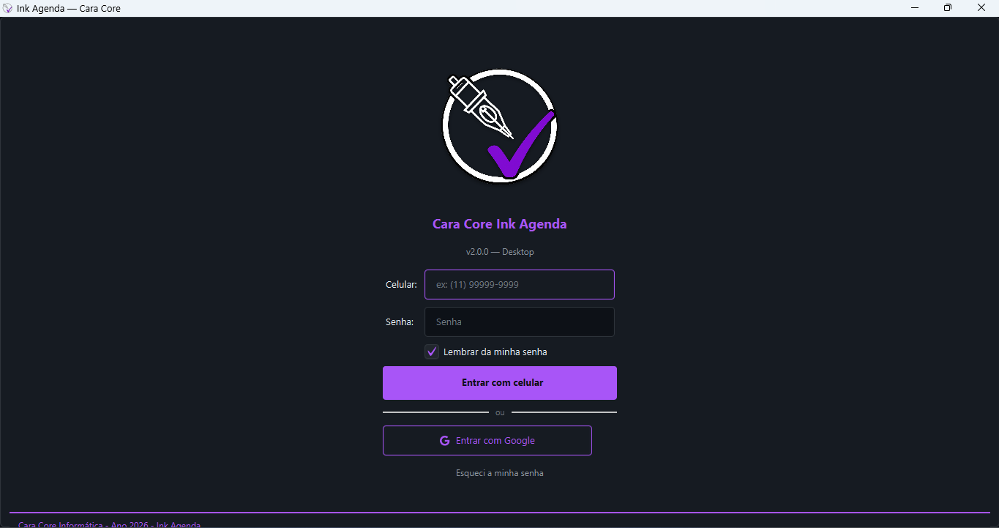
Acesso com celular e senha, opção Google
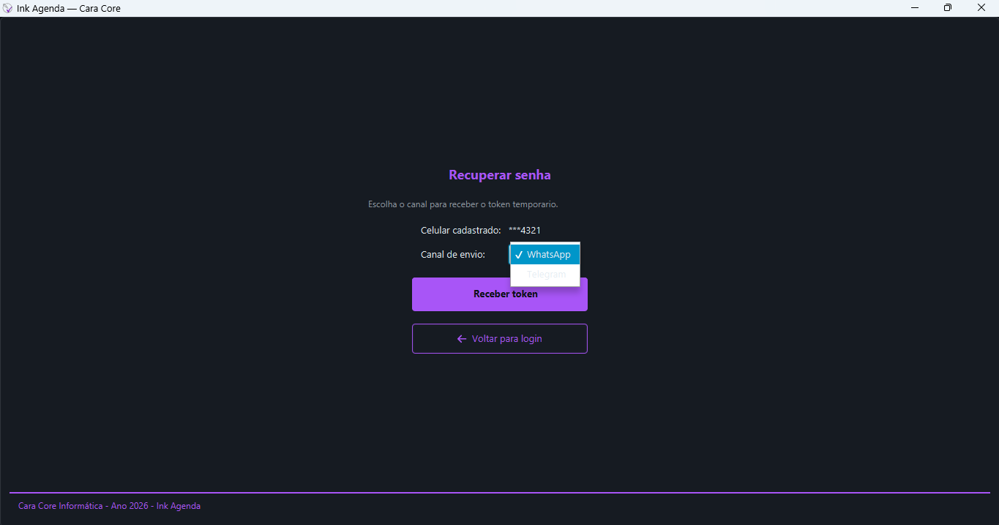
Fluxo de redefinição de senha por celular
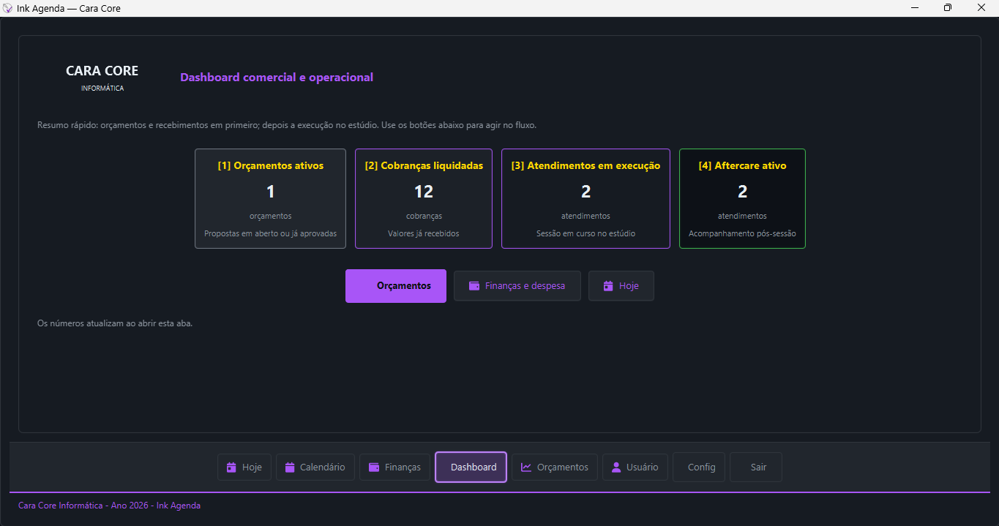
Painel inicial com visão consolidada de agenda e operação
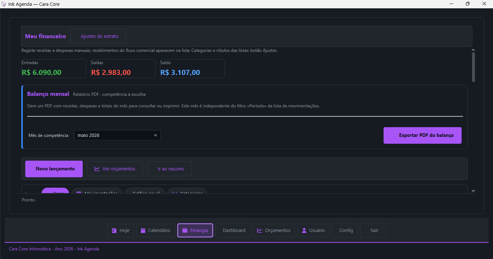
Visão inicial do módulo financeiro com entradas e saídas
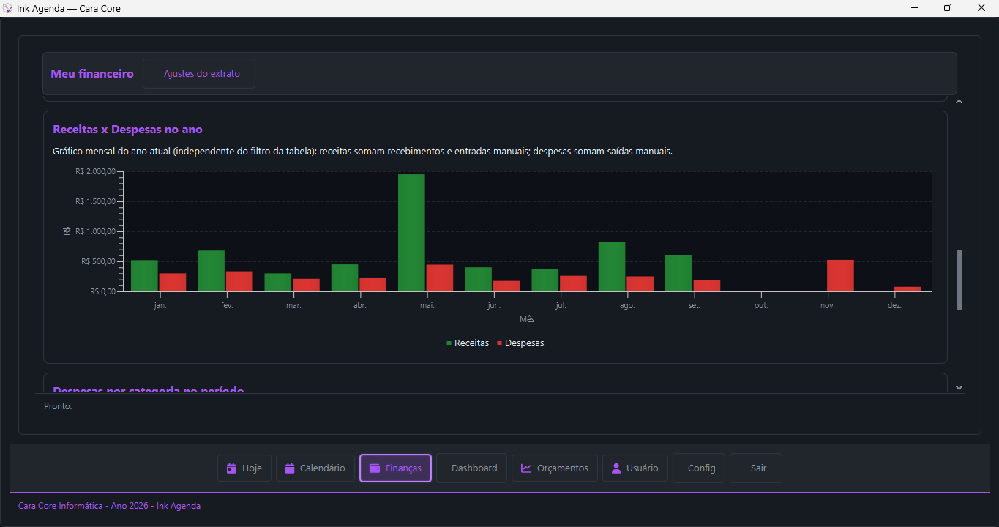
Detalhamento operacional do fluxo financeiro do estúdio
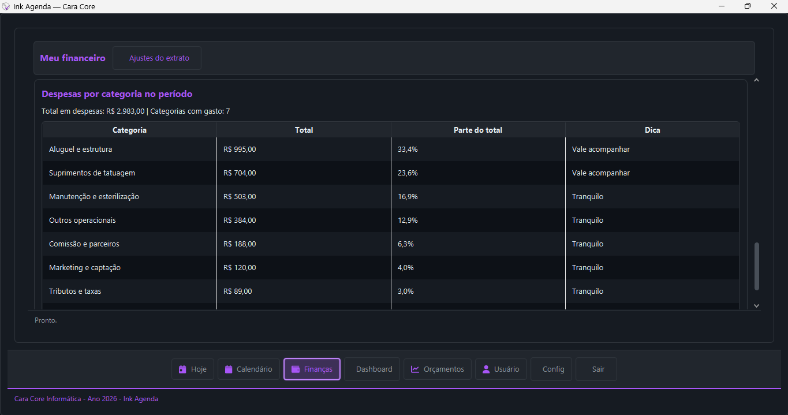
Indicadores e acompanhamento visual do resultado financeiro
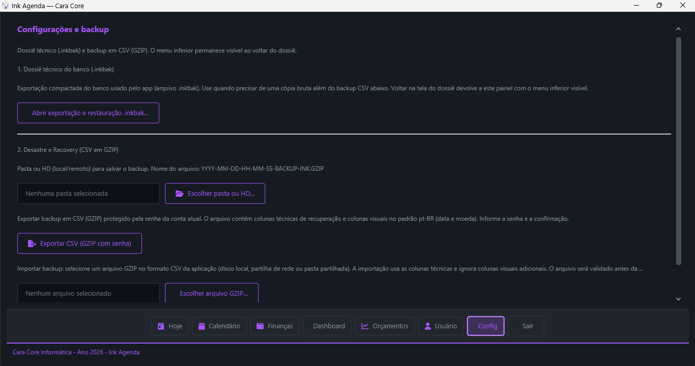
Versão mais recente do painel de configuração
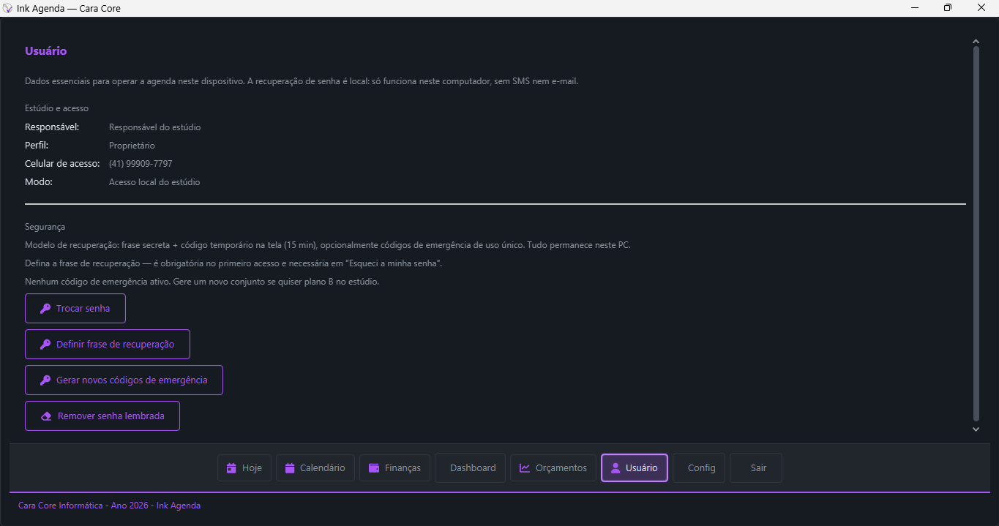
Tela de usuário com dados de perfil e manutenção de acesso
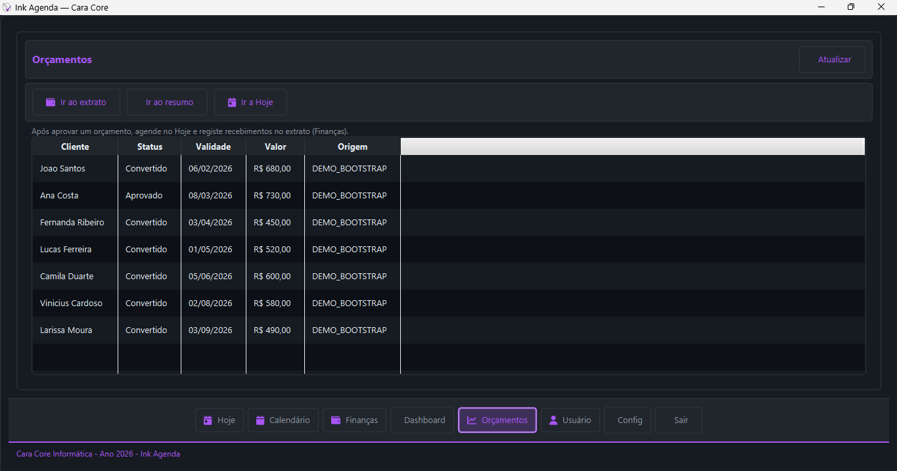
Gestão de orçamentos para planejamento de atendimentos
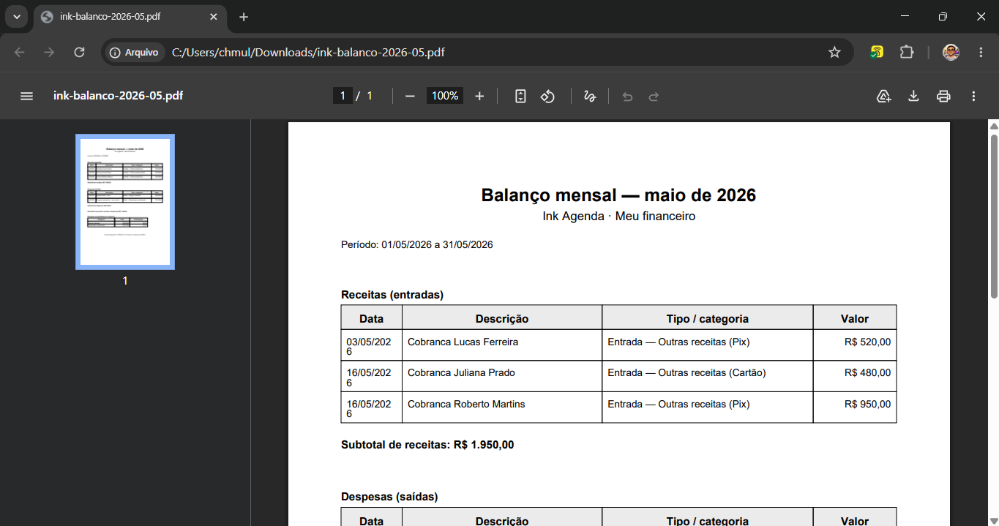
Pré-visualização e exportação de relatório para PDF
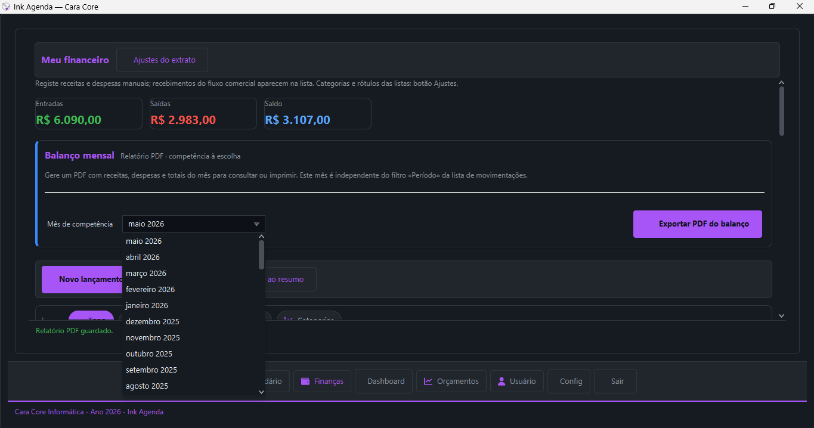
Modo de impressão para relatórios operacionais do estúdio
Capturas atualizadas em: 15/05/2026 — vitrine pública com o conjunto mais recente de telas.
Stack e Entrega
Tecnologias
- Java 21: Linguagem e runtime
- JavaFX 21.0.11: Interface gráfica desktop
- SQLite: Banco de dados local
- Maven: Build e dependências
- JUnit 5 / Mockito: Testes unitários; JaCoCo (cobertura)
Oficina e Loja
Oficina: caracore-ink (repositório do app). Loja: caracore-ink-releases (vitrine, releases e download em ink.caracore.com.br).
Implantação local (guia rápido)
Pré-requisitos mínimos
- Windows 10/11 atualizado
- Perfil de usuário com permissão de instalação local
- Espaço livre para app, banco SQLite e backups
- Internet apenas para baixar instalador (operação pode ser local)
Validação pós-instalação
- Abrir o Ink Agenda e confirmar carregamento da tela inicial
- Criar 1 cliente de teste e 1 agendamento
- Registrar 1 receita e 1 despesa
- Executar 1 exportação de backup com senha
Operação diária do estúdio
Checklist recomendado por turno:
- Conferir agenda do dia e evitar conflitos de horário antes de abrir atendimento
- Atualizar status de pagamento na lista do dia ao finalizar sessão
- Lançar despesas operacionais no mesmo dia para manter saldo real
- Fechar turno conferindo saldo e número de atendimentos executados
Backup e restauração (governança local)
Política sugerida
- Backup diário no encerramento do expediente
- Senha forte no arquivo de exportação
- Cópia adicional em mídia externa/segura
- Retenção mínima: últimos 7 dias úteis
Teste de restauração
- Executar teste de importação semanal em ambiente controlado
- Confirmar integridade de clientes, agenda e financeiro após importação
- Registrar data/hora do teste para rastreabilidade operacional
Canal de release e versionamento
Distribuição oficial centralizada em caracore-ink-releases. A loja local referencia um único canal para download e histórico de versões, evitando duplicidade de artefatos.
Diagnóstico rápido local (N1)
- Aplicativo não inicia: reiniciar Windows e executar novamente como usuário local
- Lentidão: validar tamanho da base local e executar backup + manutenção preventiva
- Erro em dados: restaurar último backup validado e repetir operação
- Persistindo falha: acionar canal de feedback com horário do incidente e evidências